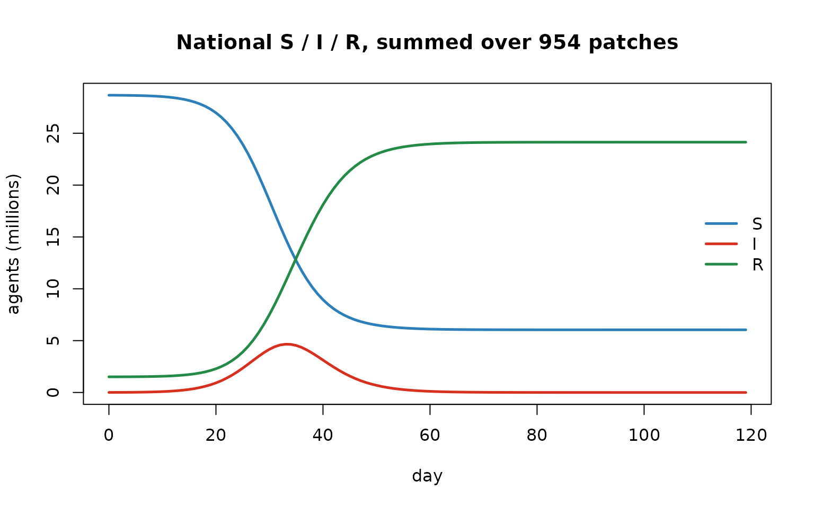
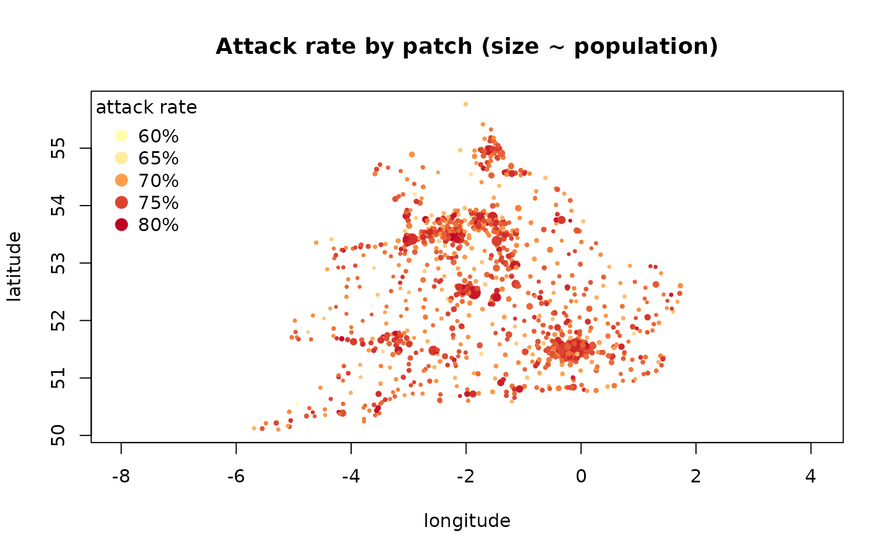

Spatial epidemics: metapopulations and migration networks
Source:vignettes/articles/spatial_metapopulation.Rmd
spatial_metapopulation.RmdCompanion to
examples/simple_sir.R.
Why space?
A single well-mixed population is a useful fiction, but real epidemics play out across a metapopulation — a set of patches (towns, districts, countries) each with its own local transmission, coupled by the movement of people. Coupling drives the phenomena a single-patch model can’t show: spatial invasion waves, rescue of a faded-out patch by its neighbours, and partial synchrony between patches.
Razer models a metapopulation as
patches each running the usual SIR transmission, plus a coupling matrix
where
is the fraction of patch
’s
force of infection that is exported to patch
.
The kernel calc_foi redistributes each tick:
i.e. patch keeps the un-exported part of its own local force and imports a share of every other patch’s.
Building a coupling network
We use the England & Wales measles patches (954 registration
districts, each with a 1944 population and a latitude/longitude). Razer
ships several migration models that turn pairwise
distances + populations into a weight matrix — gravity(),
radiation(), stouffer(),
competing_destinations() — plus
row_normalizer() to cap each patch’s total emigration so
the rows are valid export fractions. Here: the parameter-free
radiation model (Simini et al., Nature 2012),
capped at 10% emigration per patch.
# A pkgdown article under vignettes/articles/, so the shared example data is two up.
scenario <- read.csv(file.path("..", "..", "examples", "data", "EnglandWalesMeasles_places.csv"))
D <- distances(scenario$latitude, scenario$longitude) # pairwise great-circle km
W <- radiation(scenario$population, D, k = 1, include_home = FALSE)
W <- row_normalizer(W, max_rowsum = 0.1) # cap total emigration at 10%
cat(sprintf("%d patches; total population %s; network row-sums in [%.3f, %.3f]\n",
nrow(scenario), format(sum(scenario$population), big.mark = ","),
min(rowSums(W)), max(rowSums(W))))## 954 patches; total population 30,182,538; network row-sums in [0.009, 0.100]Run a spatial SIR
run_model() takes the coupling matrix directly as
network; internally it is stored once as a 2-D Column so
calc_foi reads it Rust-side each tick. We seed a few
infectious and ~5% immune in every patch and run a daily SIR for ~4
months.
scenario$I <- pmin(5L, scenario$population) # 5 infectious / patch
scenario$R <- pmin(as.integer(0.05 * scenario$population), scenario$population - scenario$I)
m <- run_model(scenario, "SIR", nticks = 120L, r0 = 2,
infectious_period = dist_gamma(2, 2), network = W, seed = 1L)
days <- 0:119
S <- rowSums(m$nodes$S$values()); I <- rowSums(m$nodes$I$values()); R <- rowSums(m$nodes$R$values())
matplot(days, cbind(S, I, R) / 1e6, type = "l", lty = 1, lwd = 2.5,
col = c("#2c7fb8", "#d7301f", "#238b45"), xlab = "day", ylab = "agents (millions)",
main = "National S / I / R, summed over 954 patches")
legend("right", c("S", "I", "R"), col = c("#2c7fb8", "#d7301f", "#238b45"), lwd = 2.5, bty = "n")
Map the burden
Because the model is spatial, the interesting output is per
patch. Each patch’s census is its own column of
m$nodes$I$values(); here we map the attack
rate (fraction ever infected) at each patch’s coordinates,
sized by population — the recognizable shape of England & Wales.
attack <- colSums(m$nodes$incidence$values()) / scenario$population # per-patch fraction infected
pal <- grDevices::colorRampPalette(c("#ffffb2", "#fd8d3c", "#bd0026"))(64)
rng <- range(attack); idx <- pmax(1L, pmin(64L, 1L + round(63 * (attack - rng[1]) / max(diff(rng), 1e-9))))
plot(scenario$longitude, scenario$latitude, pch = 19, asp = 1, col = pal[idx],
cex = 0.3 + 1.8 * sqrt(scenario$population / max(scenario$population)),
xlab = "longitude", ylab = "latitude", main = "Attack rate by patch (size ~ population)")
lv <- pretty(rng, 4)
legend("topleft", title = "attack rate", bty = "n", pch = 19, pt.cex = 1.4,
legend = sprintf("%.0f%%", 100 * lv),
col = pal[pmax(1L, pmin(64L, 1L + round(63 * (lv - rng[1]) / max(diff(rng), 1e-9))))])
Customize and extend
-
Migration model. Swap
radiation()forgravity(population, D, ...)(tunable distance decay) orstouffer()/competing_destinations(); tighten/loosenrow_normalizer(max_rowsum = …)to change how strongly patches couple. -
Watch an invasion wave. Seed a single
patch (e.g. the largest) with
Iand setR = 0everywhere, then map the per-patch day of peak (apply(I_mat, 2, which.max)): patches light up later the farther they sit from the seed, along the network. -
Endemic + spatial. Add the constant-population
vitals
step_exitcallback from the endemic notebook (and acapacityfor imports) to keep patches endemic and study spatial persistence / rescue effects below the critical community size. -
Seasonality per patch.
run_model’sseasonalityaccepts a fulln_ticks x n_nodesgrid (viavalues_map), so different patches can have offset school terms or climates.